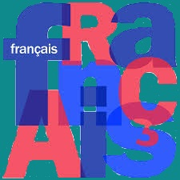

Comment s’auto-former, ou comment realiser une recherche efficace ?
L'autoformation apparaît ainsi comme un mode d'auto-développement des connaissances et
des compétences par le sujet social lui-même,
selon son rythme, avec l'aide de ressources éducatives et de médiation sociale les plus choisies possibles.
À l'inverse, l'autoformation est souvent conduite au savoir grâce à la pratique. C'est en réalisant les choses,
donc en « mettant la main à la pâte » que l'autodidacte acquiert des connaissances,
d'où l'importance de l'apprentissage par la pratique.
Tout d'abord, il faut avoir les outils nécessaires à la réalisation de cette tache.
Avoir un moyen de recherche efficace pour s'auto-former d'autant plus que très utiles,
pour commencer, il est donc possible de réaliser des recherches sur Internet, ou d'encore se conseiller
à l'aide de personne déjà formée à cette pratique.

Ensuite, il ne faut pas hésiter à aller voir différents sites internet,
même ceux-ci sont dans une autre langue.
L'information ne viendra pas à vous toute seule, il faut aller la chercher !

Pour terminer, s'auto-former passe avant tout par sois même,
il faut se motiver à avancer pour réussir à entreprendre vos démarches et les réaliser.